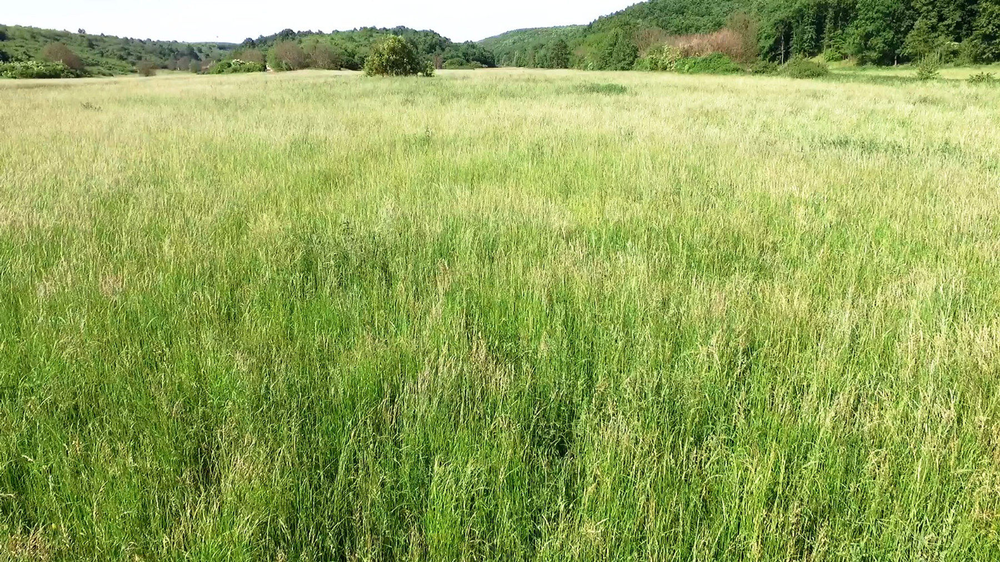
We know the ground. And the heat in it.
Geothermal heat for Hungary's towns, built on seventy years of mining knowledge: we find the hot water, plan the wells and watch them for decades. In the service of sustainable development since 1955.
Heat from the ground. We keep it flowing.
Hungary sits on hot water and plans to double its use for heating by 2030. A geothermal plant needs at least two wells: one brings the hot water up, the other sends the cooled water back down. We find the water, plan both wells and watch them for as long as they run.
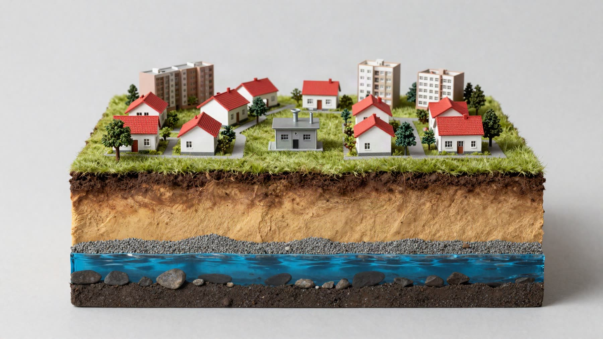
Illustration, not to scale Heating plant Hot water up Cooled water backWhat we do around a geothermal well.
- Find and model the hot water layer
- Design both wells and handle the permits
- Measure flow, pressure and temperature for as long as the wells run
- BékéscsabaGeothermal district heating, built with Rotaqua
- TótkomlósGeothermal heating system, with Rotaqua
- Nagykanizsa and ÚjudvarGeothermal engineering for MVM ERBE
Six disciplines, one team.
From the first borehole to the last tree planted, the same people plan, permit, build and measure. Pick a discipline to see what it covers.
Now follow us down.
What we know sits at every depth. Scroll through the ground, one layer at a time, and see what we do where.
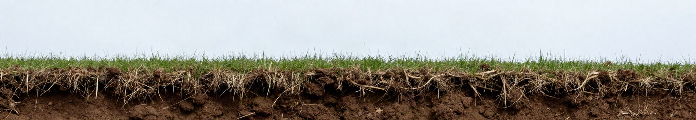
At the surface, we hand the land back.
Topsoil · where a project endsA mine is only finished when the land can be used again. We reshape, seal, cover and replant spoil heaps and tailings, then prove with measurements that it holds.
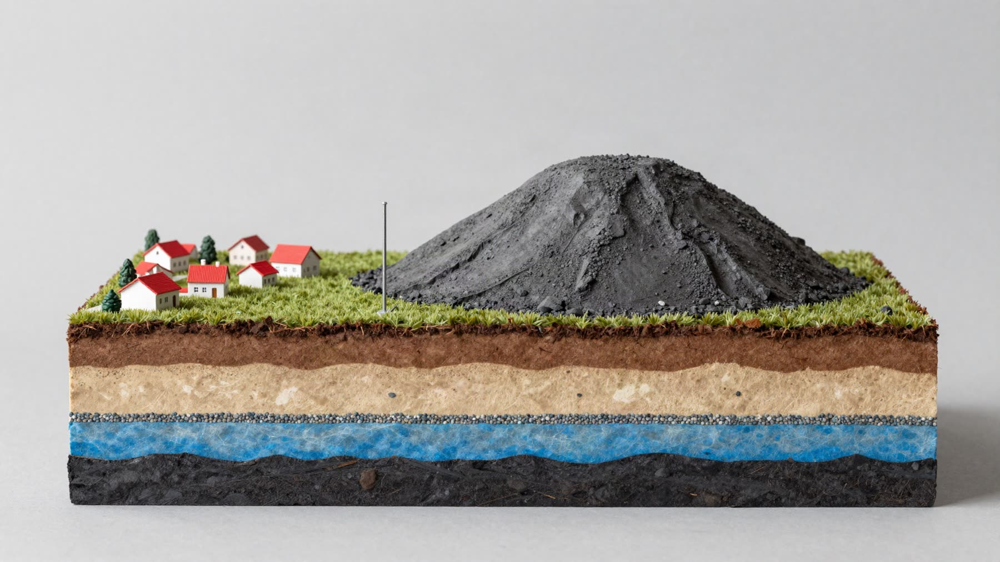
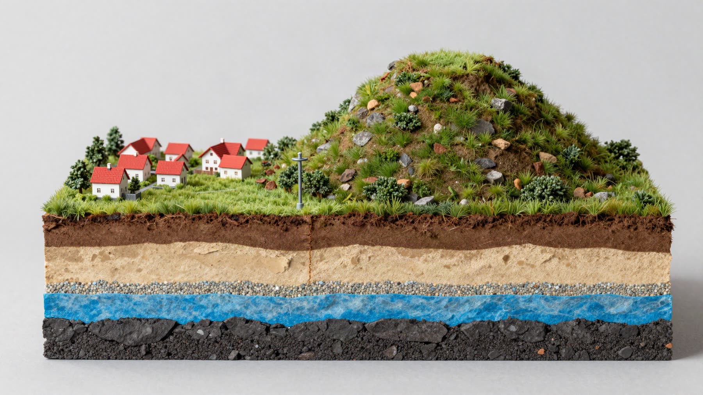
Illustration BeforeAfterThe same hill, before and after.
Drag the handle to see what a spoil heap becomes once we are done with it.
- Reshape the heap to a stable slope
- Seal it against rain and seepage
- Cover it with soil and plant it
- Keep measuring the groundwater
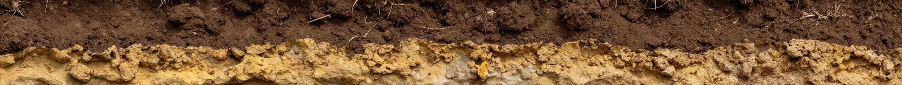
A few metres down, we watch the water.
Loess and clay · where groundwater movesWhat seeps into the ground ends up in somebody's drinking water. We map how it flows, sample it at the well and analyse it in our own accredited laboratory, which also tests for water utilities and other outside clients.
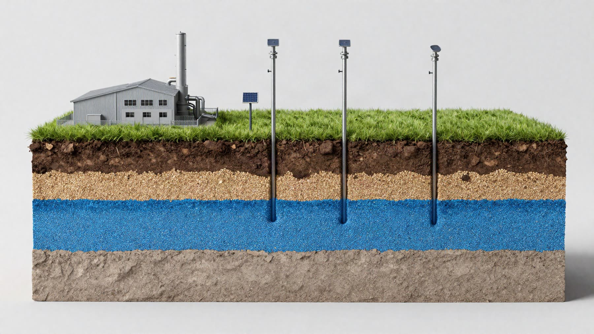
Illustration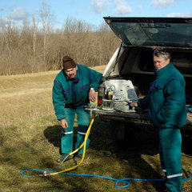
How a monitoring campaign runs.
- Sample the well, read the water on site
- Analyse preserved samples in the laboratory
- Process and model the data
- Deliver the evaluation report
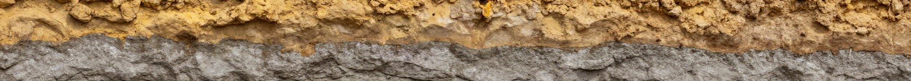
In the rock, we read what is there.
Bedrock · where the boreholes goBefore anyone builds, stores or mines, somebody has to know the ground. We drill, log the core, model the layers and explain what they mean: for power plants, for repositories, and for the raw materials the energy transition runs on.
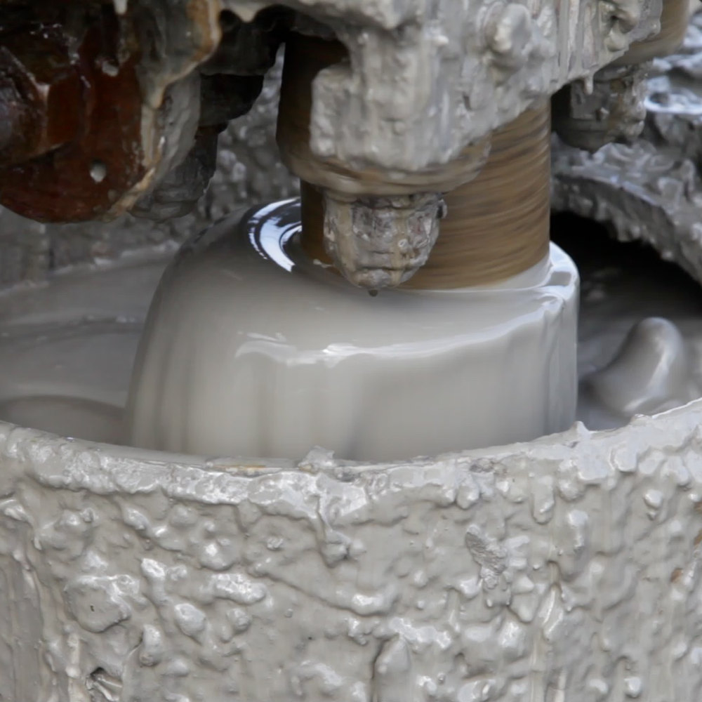
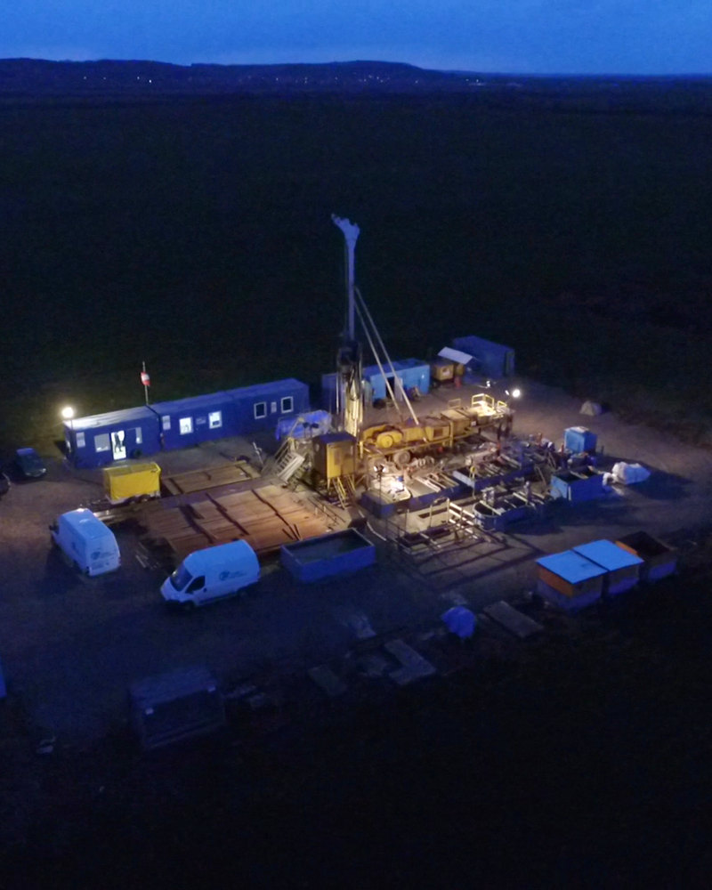
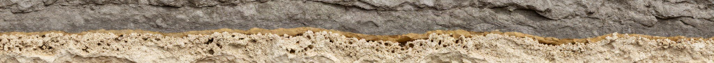
In the sandstone, the water is hot.
Sandstone · where the hot water sitsThis is the layer the hot water comes from, and the layer it has to go back into. Sending it back is the hard part of every geothermal plant. We spent five years researching it with the University of Pécs.
See our geothermal workThe law asks every operator to record flow, pressure and temperature every day, and to send the cooled water back down wherever the ground allows.
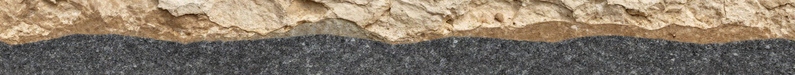
Deep inside, we build.
Granite · where it has to holdSome things need a place that stays safe for a very long time. We build it with mining methods: repositories for radioactive waste, storage caverns, pumped storage plants.
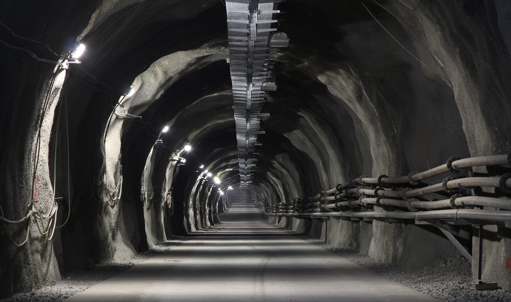
Come down with us.
We are looking for people with fresh ideas who want real responsibility and room to grow. Experienced colleagues pass on what seventy years underground have taught us.
Send an open applicationWhat we know, we pass on.
Keeping specialist knowledge alive and winning young people for it is our first priority. In 2026 we signed cooperation agreements with three universities: practice in our projects for students, research with their institutes.
- University of MiskolcFaculty of Earth and Environmental Sciences
- University of PécsPractical experience for students
- University of PannoniaJoint research, young professionals
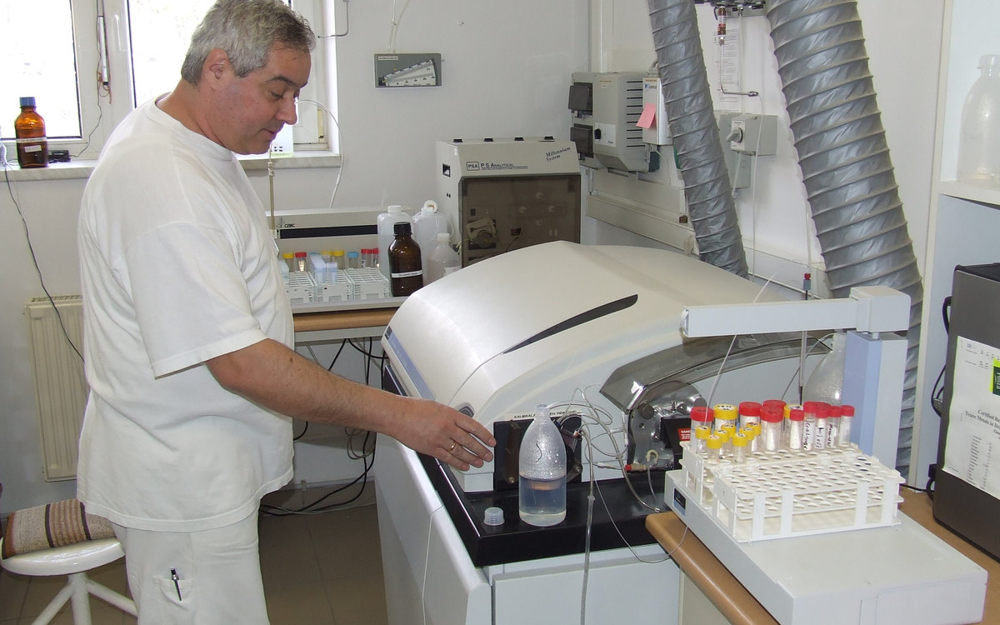
Our first European Researchers' Night
Rock samples, drill cores and our CEO on dwarves, tunnels and what people get wrong about mining.
University of Pécs Innovation Days
Data is less like oil and more like soil: it only gives back when it is looked after.
Seventy years of knowing the ground.
For four decades Mecsekérc mined and processed uranium ore. What stayed is the knowledge: how rock, water and tunnels behave, and how to leave a site in order.
Batteries, wind turbines and heat pumps all start as raw materials, and every geothermal well, storage site and repository needs ground that somebody understands. That is the work we are here for. We work under ISO 9001 and ISO 14001 and run our own accredited testing laboratory.
- 1955Uranium ore mining and processing begins
- 1993Research for the disposal of radioactive waste
- 1997Mining ends, mine closure and remediation start
- 2000Environmental services and our own laboratory
- 2004First projects as general contractor
- 2005Underground spaces built beyond mining
- 2017Research on thermal water reinjection starts with the University of Pécs